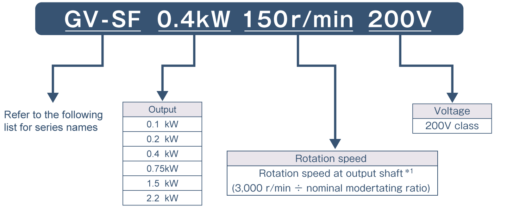
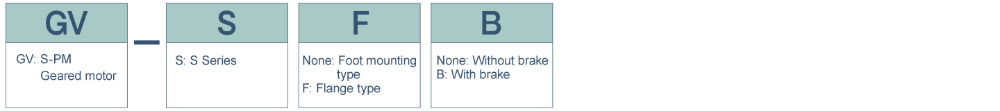

S-PM Geared Motors Parallel shaft type Model name configurations

Model name

*1For details regarding the output shaft rotaiton speed (moderating ratio), please refer to the moderating ratio chart.
Note
- S-PM series requires a dedicated drive unit.
- Not intended for commercial power supply.
Series name
GV−S Series (for uniform loads)
